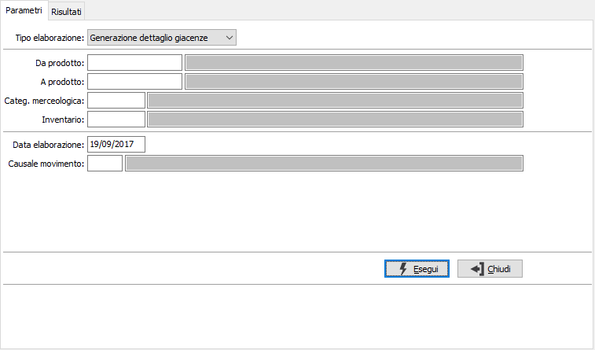
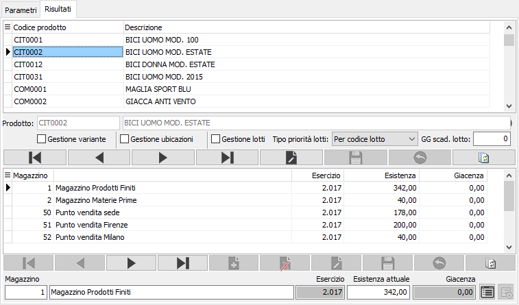

Gestione dettaglio giacenze prodotti
Il programma, utilizzabile solo sulla versione Enterprise e da chi utilizza i moduli per la gestione dei varianti, lotti o ubicazioni, consente di abilitare o disabilitare per i prodotti la gestione di una tipologia di dettaglio assegnando ad un dettaglio esistente oppure nuovo, in caso di generazione, o togliendo in caso di annullamento, il saldo delle giacenze alla data di elaborazione suddiviso per magazzino.
Il programma è orientato a soddisfare l'esigenza che si potrebbe manifestare al momento in cui un prodotto debba essere gestito con un dettaglio che fino al momento non ha mai avuto o viceversa togliere la gestione del dettaglio ad un prodotto che fino a quel momento l'aveva; ad esempio un prodotto che si decide debba essere gestito a lotti a partire da una certa data; la procedura consente di convertire le giacenze, che non erano a lotti, in giacenze per lotto.
La finestra si compone di due sezioni, la prima consente l'inserimento dei parametri di selezione, la seconda permette la gestione dei dati selezionati.

TIPO ELABORAZIONE: definisce il tipo di elaborazione da effettuare: Generazione dettaglio giacenze per attivare ed assegnare i dettagli ai saldi delle giacenze per magazzino oppure Annullamento dettaglio giacenze per togliere la gestione del dettaglio a prodotti che l'avevano stornando le giacenze.
DA PRODOTTO: eventuale codice dell'articolo, presente in anagrafica Prodotti, da cui si desidera iniziare la selezione. Confermando a vuoto, la selezione inizia con il primo prodotto valido. Sul campo è attiva la ricerca (F9) sull’anagrafica prodotti.
A PRODOTTO: eventuale codice dell'articolo, presente in anagrafica Prodotti, a cui si desidera terminare la selezione. Confermando a vuoto, la selezione termina con l’ultimo valido. Sul campo è attiva la ricerca (F9) sull’anagrafica prodotti.
CATEGORIA MERCEOLOGICA: eventuale codice della categoria merceologica a cui si vuole restringere la selezione di analisi. Sul campo è attiva la ricerca (F9) sulla tabella Categorie merceologiche.
INVENTARIO: eventuale codice inventario a cui si vuole restringere la selezione di analisi. Sul campo è attiva la ricerca (F9) sulla tabella Codici inventario.
DATA ELABORAZIONE: indica la data a cui deve essere effettuato il controllo delle giacenze; viene proposta la data di sistema; questa data sarà utilizzata per la generazione dei movimenti di magazzino.
CAUSALE: inserire la causale di magazzino idonea alla generazione dei movimenti (causale di carico). Sul campo è attiva la ricerca (F9) sulla tabella Causali magazzino di carico.
Premendo il pulsante Esegui si dà inizio all'elaborazione che porta alla seconda sezione 'Risultati' da cui effettuare la vera e propria assegnazione delle giacenze ai dettagli (in caso di generazione) oppure selezionare i prodotti per cui rimuovere il dettaglio (in caso di annullamento).

La finestra è divisa in due sezioni: quella superiore contiene i prodotti selezionati e da qui è possibile impostare, in base alla propria configurazione, la gestione dei dettagli. In caso di annullamento l'unica operazione consentita è togliere le spunte ai dettagli che si vogliono annullare.
La sezione inferiore mostra le giacenze per magazzino del prodotto selezionato nella sezione superiore; in caso di annullamento tutti i dati sono in sola visualizzazione.
In caso di generazione è possibile, una volta specificato nella sezione superiore il dettaglio o i dettagli da utilizzare, scorrere i relativi saldi e tramite i pulsanti inserire il valori per i dettagli.
 Tramite il pulsante Dettaglio è possibile inserire manualmente le relative quantità di dettaglio, tramite una finestra dove elencare i dettagli e le quantità; all'uscita da questa finestra viene effettuato un controllo di coerenza tra i dettagli inseriti e l'esistenza del magazzino.
Tramite il pulsante Dettaglio è possibile inserire manualmente le relative quantità di dettaglio, tramite una finestra dove elencare i dettagli e le quantità; all'uscita da questa finestra viene effettuato un controllo di coerenza tra i dettagli inseriti e l'esistenza del magazzino.
 Tramite il pulsante Generazione lotti, attivo se il prodotto è gestito a lotti ed è configurata la codifica automatica del lotto, è possibile generare un codice lotto a cui associare l'esistenza del magazzino.
Tramite il pulsante Generazione lotti, attivo se il prodotto è gestito a lotti ed è configurata la codifica automatica del lotto, è possibile generare un codice lotto a cui associare l'esistenza del magazzino.
Al termine delle operazioni premendo il tasto F10 oppure il bottone Salva sulla tool saranno rese effettive le modifiche, generati i movimenti di magazzino ed aggiornati i prodotti. I dati inseriti daranno origine ad un inventario fisico.